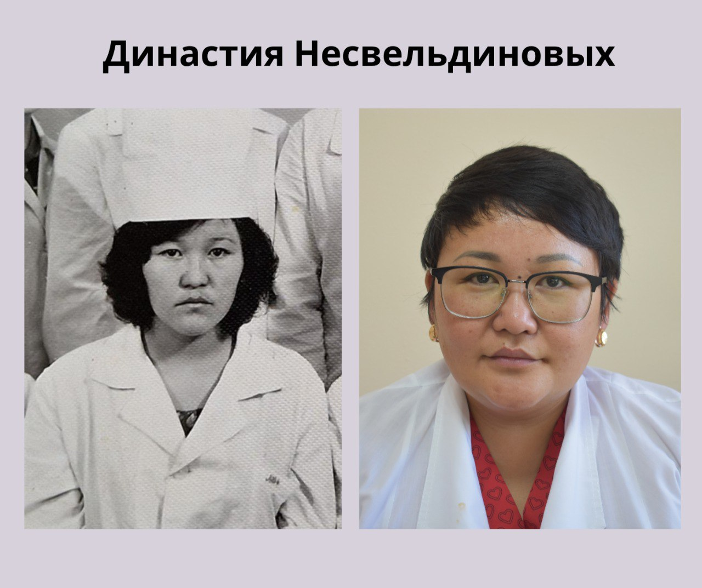

16 Қыркүйек 2024
Оқушы мұғалімнен асып түседі, ал әрбір жаңа буын алдыңғысынан әлдеқайда асып түседі... Прогресстің өзі осы, тіпті белгілі бір дәрежеде адам тектерінің эволюциясы.
ШҚО фтизиопульмонология орталығының МиО тобының фтизиатры Альмира Несвельдинованың туғаннан бері медицина қызметкерінің тамаша үлгісі болған. Анасы Гүлжиян Ахметжанқызы көп жылдар бойы Жаңасемей ауданындағы балалар ауруханасында, содан кейін Дәрігерлік амбулаторияның аға медбикесі болып жұмыс істеді.
Ана сияқты болу, қажетті және пайдалы болу, адамдарды емдеу - бұл біздің әріптесіміздің арманы.
2003 жылы Семей қаласының медицина академиясын бітіргеннен кейін, Әлмира Мұратқанқызы бөлінісі бойынша Солтүстік Қазақстанға кетеді. Дәл сол жерде ол ауылдағы терапевт ретінде алғашқы қадамдарын жасайды. Содан кейін Шемонаихада колонияның санбөлігіндегі терапевт болды. Осыдан кейін ғана туған қаласына отбасылық дәрігер болып оралады және 2007 жылдан бастап ол өзінің кәсіби қызметін Семейдің өңірлік туберкулезге қарсы диспансерінде фтизиатриямен тығыз байланыстырады.
Міне, Әлмира Мұратқанқызы біздің ұжымға кіргеніне 4 жыл болды. Бұл жерде оны тек өз ісінің кәсіпқойлығы үшін ғана емес, ең қиын және ең қуанышты сәттерде көмектесетін тамаша әзілі үшін де жақсы көреді және құрметтейді.
Биыл Альмира Несвельдинованың кәсіби өтілі 21 жасты құрайды, бұл адам жасына ауысқанда толық кәмелетке толғанын білдіреді. Ол біздің фтизиопульмонология орталығында ғана жұмыс істемейді, сонымен қатар Авиценна отбасылық денсаулық орталығында фтизиатр дәрігер ретінде қабылдау жүргізеді.
Осы жылдар ішінде ол өзінің медакадемиядағы оқытушыларын және оған ең құнды білім мен тәлім берген өзінің тәлімгерлерін, аға серіктестерін зор ризашылықпен еске алады.
Сен жартылай дәрігер бола алмайсың, демек сен өз кәсібіңе толығымен берілуің керек және керек, пациентті тыңдап, тыңдауың керек - Несвельдинова Альмира Мұратқанқызы шығарған және онымен бірге өмір сүріп жатқан басты сабақ.